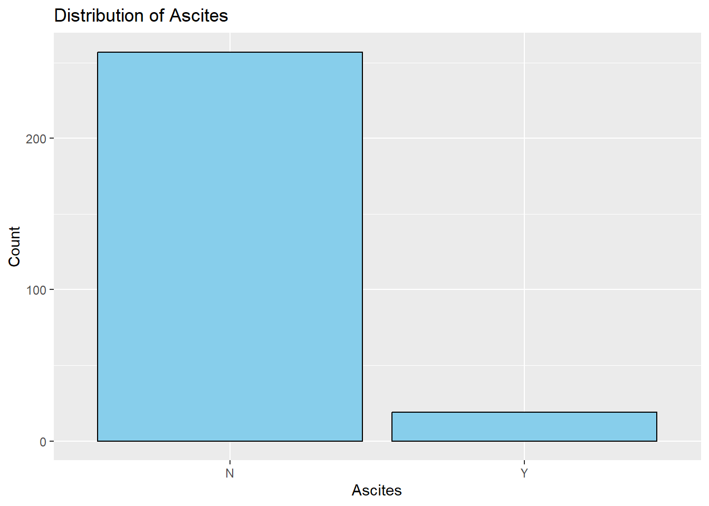

It represents the number of visualizations to examine the distribution of different variables in the dataset using the R ggplot2 library. Different plots are produced by each ggplot call; they include histograms for continuous variables like age, bilirubin levels, and platelet counts, and bar charts for categorical variables like drug type, sex, and disease status. Value distribution is efficiently seen by building the histograms with predetermined bin widths. With their thorough overview of the dataset, these visualizations make it easier to spot trends, patterns, and possible outliers in a variety of variables. All things considered, this method effectively condenses the dataset’s distributional properties, providing a strong basis for more exploratory data analysis and statistical modeling.
Code
data =read.csv("C:/Users/HP/Downloads/cirrhosis+patient+survival+prediction+dataset-1/cirrhosis.csv")missing_values <-colSums(is.na(data))# If there are missing values, impute them using mean imputationdata_imputed <-na.omit(data)cirrhosis_data <-na.omit(data_imputed)head(cirrhosis_data)
ID N_Days Status Drug Age Sex Ascites Hepatomegaly Spiders Edema
1 1 400 D D-penicillamine 21464 F Y Y Y Y
2 2 4500 C D-penicillamine 20617 F N Y Y N
3 3 1012 D D-penicillamine 25594 M N N N S
4 4 1925 D D-penicillamine 19994 F N Y Y S
5 5 1504 CL Placebo 13918 F N Y Y N
7 7 1832 C Placebo 20284 F N Y N N
Bilirubin Cholesterol Albumin Copper Alk_Phos SGOT Tryglicerides Platelets
1 14.5 261 2.60 156 1718.0 137.95 172 190
2 1.1 302 4.14 54 7394.8 113.52 88 221
3 1.4 176 3.48 210 516.0 96.10 55 151
4 1.8 244 2.54 64 6121.8 60.63 92 183
5 3.4 279 3.53 143 671.0 113.15 72 136
7 1.0 322 4.09 52 824.0 60.45 213 204
Prothrombin Stage
1 12.2 4
2 10.6 3
3 12.0 4
4 10.3 4
5 10.9 3
7 9.7 3
Code
library(dplyr) library(ggplot2)# Drugggplot(data_imputed, aes(x = Drug)) +geom_bar(fill ="skyblue", color ="black") +labs(x ="Drug", y ="Count", title ="Distribution of Drug")
Code
# Ageggplot(data_imputed, aes(x = Age)) +geom_histogram(binwidth =1000, fill ="skyblue", color ="black") +labs(x ="Age", y ="Frequency", title ="Distribution of Age")
Code
# Ascitesggplot(data_imputed, aes(x = Ascites)) +geom_bar(fill ="skyblue", color ="black") +labs(x ="Ascites", y ="Count", title ="Distribution of Ascites")

Code
# Hepatomegalyggplot(data_imputed, aes(x = Hepatomegaly)) +geom_bar(fill ="skyblue", color ="black") +labs(x ="Hepatomegaly", y ="Count", title ="Distribution of Hepatomegaly")
Code
# Spidersggplot(data_imputed, aes(x = Spiders)) +geom_bar(fill ="skyblue", color ="black") +labs(x ="Spiders", y ="Count", title ="Distribution of Spiders")
Code
# Edemaggplot(data_imputed, aes(x = Edema)) +geom_bar(fill ="skyblue", color ="black") +labs(x ="Edema", y ="Count", title ="Distribution of Edema")
Code
# Bilirubinggplot(data_imputed, aes(x = Bilirubin)) +geom_histogram(binwidth =1, fill ="skyblue", color ="black") +labs(x ="Bilirubin", y ="Frequency", title ="Distribution of Bilirubin")
Code
# Cholesterolggplot(data_imputed, aes(x = Cholesterol)) +geom_histogram(binwidth =50, fill ="skyblue", color ="black") +labs(x ="Cholesterol", y ="Frequency", title ="Distribution of Cholesterol")
Code
# Albuminggplot(data_imputed, aes(x = Albumin)) +geom_histogram(binwidth =0.5, fill ="skyblue", color ="black") +labs(x ="Albumin", y ="Frequency", title ="Distribution of Albumin")
Code
# Copperggplot(data_imputed, aes(x = Copper)) +geom_histogram(binwidth =50, fill ="skyblue", color ="black") +labs(x ="Copper", y ="Frequency", title ="Distribution of Copper")
Code
# Alk_Phosggplot(data_imputed, aes(x = Alk_Phos)) +geom_histogram(binwidth =500, fill ="skyblue", color ="black") +labs(x ="Alkaline Phosphatase", y ="Frequency", title ="Distribution of Alkaline Phosphatase")
Code
# SGOTggplot(data_imputed, aes(x = SGOT)) +geom_histogram(binwidth =10, fill ="skyblue", color ="black") +labs(x ="SGOT", y ="Frequency", title ="Distribution of SGOT")
Code
# Triglyceridesggplot(data_imputed, aes(x = Tryglicerides)) +geom_histogram(binwidth =10, fill ="skyblue", color ="black") +labs(x ="Triglycerides", y ="Frequency", title ="Distribution of Triglycerides")
Code
# Plateletsggplot(data_imputed, aes(x = Platelets)) +geom_histogram(binwidth =50, fill ="skyblue", color ="black") +labs(x ="Platelets", y ="Frequency", title ="Distribution of Platelets")
Code
# Prothrombinggplot(data_imputed, aes(x = Prothrombin)) +geom_histogram(binwidth =0.5, fill ="skyblue", color ="black") +labs(x ="Prothrombin", y ="Frequency", title ="Distribution of Prothrombin")
Code
# Stageggplot(data_imputed, aes(x = Stage)) +geom_bar(fill ="skyblue", color ="black") +labs(x ="Stage", y ="Count", title ="Distribution of Stage")
Disease affecting the target variable
A chi-square test is a statistical test used to compare observed results with expected results. The purpose of these chi-square tests is to evaluate the relationship between the target variable Status and each disease-related characteristic (edema, spiders, hepatomegaly, and ascites). The distribution of the disease-related characteristic is independent of the severity of the condition represented by Status, according to the null hypothesis for each test, which states that there is no association between the disease-related feature and Status. An relationship between the two variables is the alternate hypothesis.
Each chi-square test’s p-value expresses the likelihood of seeing the data in the event that the null hypothesis were correct. A low p-value (< 0.05) indicates that there is enough data to rule out the null hypothesis and draw the conclusion that Status and the disease-related characteristic are significantly correlated.
Code
# Create contingency tables for each disease-related feature and Statustable_ascites <-table(data_imputed$Ascites, data_imputed$Status)table_hepatomegaly <-table(data_imputed$Hepatomegaly, data_imputed$Status)table_spiders <-table(data_imputed$Spiders, data_imputed$Status)table_edema <-table(data_imputed$Edema, data_imputed$Status)# Visualize the relationship using stacked bar chartspar(mfrow =c(2, 2)) # Set up a 2x2 layout for plotsbarplot(table_ascites, beside =TRUE, legend =TRUE, main ="Ascites vs. Status")barplot(table_hepatomegaly, beside =TRUE, legend =TRUE, main ="Hepatomegaly vs. Status")barplot(table_spiders, beside =TRUE, legend =TRUE, main ="Spiders vs. Status")barplot(table_edema, beside =TRUE, legend =TRUE, main ="Edema vs. Status")
Code
# Conduct chi-square tests for independencechi_sq_ascites <-chisq.test(table_ascites)chi_sq_hepatomegaly <-chisq.test(table_hepatomegaly)chi_sq_spiders <-chisq.test(table_spiders)chi_sq_edema <-chisq.test(table_edema)# Print the results of chi-square testsprint("Chi-square test results for Ascites vs. Status:")
[1] "Chi-square test results for Ascites vs. Status:"
Although the p-value (0.0007102) is slightly larger than the typical significance level of 0.05, it is still considered statistically significant. Thus, we conclude that there is a significant association between Spiders and Status.
Clustering
The thresholds for aberrant values derived from broad reference ranges for a variety of laboratory measures that are frequently linked to the health and function of the liver.
To find patient groups with comparable laboratory profiles, we apply k-means clustering to the scaled laboratory values.
Construction of a survival object based on the time to an event death and fits a survival model using the Kaplan-Meier estimator. Kaplan-Meier survival curves are plotted for each cluster, showing the probability of survival over time.
Code
# Define thresholds for abnormal values based on general reference rangesthresholds <-list(Bilirubin =c(0.3, 1.2), # Normal total bilirubin levels (mg/dL)Cholesterol =c(0, 200), # Normal total cholesterol levels (mg/dL)Albumin =c(3.5, 5.0), # Normal serum albumin levels (g/dL)Copper =c(70, 140), # Normal serum copper levels (µg/dL)Alk_Phos =c(44, 147), # Normal alkaline phosphatase levels (IU/L)SGOT =c(0, 40), # Normal serum glutamic-oxaloacetic transaminase levels (IU/L)Tryglicerides =c(0, 150), # Normal triglyceride levels (mg/dL)Platelets =c(150, 450), # Normal platelet counts (per microliter of blood)Prothrombin =c(11, 13.5) # Normal prothrombin time (seconds))# Select the relevant lab value columnslab_columns <- cirrhosis_data %>%select(Bilirubin, Cholesterol, Albumin, Copper, Alk_Phos, SGOT, Tryglicerides, Platelets, Prothrombin)# Ensure numeric lab valueslab_columns <- lab_columns %>%mutate_all(as.numeric)# Identify rows without missing valuescomplete_cases <-complete.cases(lab_columns)# Filter both the original and lab data based on complete rowslab_values <- lab_columns[complete_cases, ]cirrhosis_data_clean <- cirrhosis_data[complete_cases, ]# Apply k-means clusteringset.seed(123)kmeans_clusters <-kmeans(scale(lab_values), centers =3) # Adjust the number of clusters as neededcirrhosis_data_clean$Cluster <-as.factor(kmeans_clusters$cluster)# Function to classify values based on thresholdsclassify_abnormal <-function(value, range) {if (is.na(value)) {return(NA) } elseif (value < range[1] || value > range[2]) {return("Abnormal") } else {return("Normal") }}# Apply the function to classify each lab value based on the thresholdsfor (param innames(thresholds)) { cirrhosis_data_clean[[paste0(param, "_Class")]] <-mapply(classify_abnormal, cirrhosis_data_clean[[param]], MoreArgs =list(range = thresholds[[param]]))}# Calculate the proportion of abnormal lab values per clusterabnormal_props <- cirrhosis_data_clean %>%group_by(Cluster) %>%summarize(across(ends_with("_Class"), ~mean(. =="Abnormal", na.rm =TRUE)))print(abnormal_props)
# Survival Analysislibrary(survival)# Create the survival objectsurv_obj <-Surv(time = cirrhosis_data_clean$N_Days, event =ifelse(cirrhosis_data_clean$Status =="D", 1, 0))# Fit the survival model by clustersfit <-survfit(surv_obj ~ Cluster, data = cirrhosis_data_clean)# Plot Kaplan-Meier survival curvesplot(fit, col =1:3, lty =1:3, xlab ="Time (days)", ylab ="Survival Probability")legend("topright", legend =levels(cirrhosis_data_clean$Cluster), col =1:3, lty =1:3)# Log-rank test to compare survival curveslog_rank_test <-survdiff(surv_obj ~ Cluster, data = cirrhosis_data_clean)p_value <-1-pchisq(log_rank_test$chisq, length(log_rank_test$n) -1)title(sub =paste("Log-rank p-value:", round(p_value, 4)))
Describing which variables are heavily abnormal
In general, this code offers a methodical approach to recognize observations that display significant departures from typical values for several laboratory parameters, assisting in the identification of potentially alarming situations that require additional examination.
Code
# Calculate the midpoint of the threshold range for each variablethreshold_midpoints <-sapply(thresholds, function(x) mean(x))# Calculate the distance of each observation's value from the midpoint of the threshold range for each variabledistances <-sapply(names(thresholds), function(var) abs(cirrhosis_data_clean[[var]] - threshold_midpoints[var]))# Summarize the distance across all threshold variables for each observationtotal_distance <-rowSums(distances)# Define a threshold for defining "heavily abnormal" observationsthreshold_distance <-3# Example threshold (can be adjusted based on your requirements)# Determine which variables are heavily abnormal for each observationheavily_abnormal_vars <-apply(distances, 1, function(x) names(thresholds)[x > threshold_distance])# Create a new column indicating observations where the summarized distance exceeds the defined thresholdcirrhosis_data_clean$Heavily_Abnormal <-ifelse(total_distance > threshold_distance, paste0("(", paste(heavily_abnormal_vars, collapse =", "), ")"), "")
Overall summary of dataset
An overview of each variable’s value distribution is given by this, making it easier to see any potential outliers or odd patterns, boxplots to see how the same variables are distributed. Boxplots make it simple to compare distributions across variables by displaying the data’s median, quartiles, and any outliers. In general, this code offers a methodical approach to recognize observations that display significant departures from typical values for several laboratory parameters, assisting in the identification of potentially alarming situations that require additional examination.
Bilirubin Cholesterol Albumin Copper
Min. : 0.300 Min. : 120.0 Min. :1.960 Min. : 4.00
1st Qu.: 0.800 1st Qu.: 249.5 1st Qu.:3.310 1st Qu.: 42.75
Median : 1.400 Median : 310.0 Median :3.545 Median : 74.00
Mean : 3.334 Mean : 371.3 Mean :3.517 Mean :100.77
3rd Qu.: 3.525 3rd Qu.: 401.0 3rd Qu.:3.772 3rd Qu.:129.25
Max. :28.000 Max. :1775.0 Max. :4.400 Max. :588.00
Alk_Phos SGOT Tryglicerides Platelets
Min. : 289.0 Min. : 28.38 Min. : 33.0 Min. : 62.0
1st Qu.: 922.5 1st Qu.: 82.46 1st Qu.: 85.0 1st Qu.:200.0
Median : 1277.5 Median :116.62 Median :108.0 Median :257.0
Mean : 1996.6 Mean :124.12 Mean :125.0 Mean :261.8
3rd Qu.: 2068.2 3rd Qu.:153.45 3rd Qu.:151.2 3rd Qu.:318.2
Max. :13862.4 Max. :457.25 Max. :598.0 Max. :563.0
Prothrombin
Min. : 9.00
1st Qu.:10.00
Median :10.60
Mean :10.74
3rd Qu.:11.20
Max. :17.10
Code
#measures such as mean, median, standard deviation, minimum, and maximum. This will give you an overview of the distribution of values and help identify potential outliers.# Visualize the distribution using boxplotsboxplot(data[, c("Bilirubin", "Cholesterol", "Albumin", "Copper", "Alk_Phos", "SGOT", "Tryglicerides", "Platelets", "Prothrombin")])